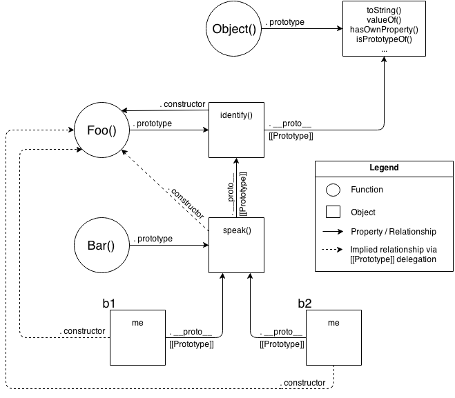

You Don't Know JS
this & object prototypes
inspired by getify
Presented by
High-level Overview
- this Or That?
- this All Makes Sense Now
- Objects
- Mixing (Up) "Class" Objects
- Prototypes
- Behavior Delegation
- ES6 class
this Or That?
- Why
this? - Confusions
- Itself
- It's scope
- What's
this?
Why this ?
function identify() {
return this.name.toUpperCase();
}
function speak() {
var greeting = "Hello, I'm " + identify.call( this );
console.log( greeting );
}
var me = {
name: "Kyle"
};
var you = {
name: "Reader"
};
identify.call( me ); // KYLE
identify.call( you ); // READER
speak.call( me ); // Hello, I'm KYLE
speak.call( you ); // Hello, I'm READERWhy this ?
function identify(context) {
return context.name.toUpperCase();
}
function speak(context) {
var greeting = "Hello, I'm " + identify( context );
console.log( greeting );
}
identify( you ); // READER
speak( me ); // Hello, I'm KYLE- way of implicitly "passing along" an object reference
Confusions
"this" creates confusion when developers try to think about it too literally
Confusions - Itself
this refers to the function itself (in JS all functions are objects)
function foo(num) {
console.log( "foo: " + num );
// keep track of how many times `foo` is called
this.count++;
}
foo.count = 0;
var i;
for (i=0; i<10; i++) {
if (i > 5) {
foo( i );
}
}
// how many times was `foo` called?
console.log( foo.count ); // 0 -- WTF?Confusions - Itself
Fixing with variable from outer scope
function foo(num) {
console.log( "foo: " + num );
// keep track of how many times `foo` is called
data.count++;
}
var data = {
count: 0
};
var i;
for (i=0; i<10; i++) {
if (i > 5) {
foo( i );
}
}
// how many times was `foo` called?
console.log( data.count ); // 4Referencing Function as an Object
function foo() {
foo.count = 4; // `foo` refers to itself
}
setTimeout( function(){
// anonymous function (no name), cannot
// refer to itself
}, 10 );Confusions - Itself
Fixing with lexical-scope function's name
function foo(num) {
console.log( "foo: " + num );
// keep track of how many times `foo` is called
foo.count++;
}
foo.count = 0;
var i;
for (i=0; i<10; i++) {
if (i > 5) {
foo( i );
}
}
// how many times was `foo` called?
console.log( foo.count ); // 4Confusions - Itself
Fixing with this
function foo(num) {
console.log( "foo: " + num );
// keep track of how many times `foo` is called
// Note: `this` IS actually `foo` now, based on
// how `foo` is called (see below)
this.count++;
}
foo.count = 0;
var i;
for (i=0; i<10; i++) {
if (i > 5) {
// using `call(..)`, we ensure the `this`
// points at the function object (`foo`) itself
foo.call( foo, i );
}
}
console.log( foo.count ); // 4Confusions - Its scope
function foo() {
var a = 2;
this.bar();
}
function bar() {
console.log( this.a );
}
foo(); //undefinedWhat's this?
this is not an author-time binding but a runtime binding
this All Makes Sense Now
- Call-site
- Nothing But Rules
- Everything in Order
- Binding Exceptions
- Lexical this
Call-site
Call-site: the location in code where a function is called
function baz() {
// call-stack is: `baz`
// so, our call-site is in the global scope
console.log( "baz" );
bar(); // <-- call-site for `bar`
}
function bar() {
// call-stack is: `baz` -> `bar`
// so, our call-site is in `baz`
console.log( "bar" );
foo(); // <-- call-site for `foo`
}
function foo() {
// call-stack is: `baz` -> `bar` -> `foo`
// so, our call-site is in `bar`
console.log( "foo" );
}
baz(); // <-- call-site for `baz`Nothing But Rules
Inspect the call-site and determine which of 4 rules applies
- Default Binding
- Implicit Binding
- Explicit Binding
- New Binding
Default Binding
function foo() {
console.log( this.a );
}
var a = 2;
foo(); // 2Default Binding
function foo() {
"use strict";
console.log( this.a );
}
var a = 2;
foo(); // TypeError: `this` is `undefined`Default Binding
function foo() {
console.log( this.a );
}
var a = 2;
(function(){
"use strict";
foo(); // 2
})();- try to not mix
strict modeand non-strict mode
Implicit Binding
function foo() {
console.log( this.a );
}
var obj = {
a: 2,
foo: foo
};
obj.foo(); // 2Implicit Binding
function foo() {
console.log( this.a );
}
var obj2 = {
a: 42,
foo: foo
};
var obj1 = {
a: 2,
obj2: obj2
};
obj1.obj2.foo(); // 42Implicitly Lost
function foo() {
console.log( this.a );
}
var obj = {
a: 2,
foo: foo
};
var bar = obj.foo; // function reference/alias!
var a = "oops, global"; // `a` also property on global object
bar(); // "oops, global"Implicitly Lost
function foo() {
console.log( this.a );
}
function doFoo(fn) {
// `fn` is just another reference to `foo`
fn(); // <-- call-site!
}
var obj = {
a: 2,
foo: foo
};
var a = "oops, global"; // `a` also property on global object
doFoo( obj.foo ); // "oops, global"Implicitly Lost
function foo() {
console.log( this.a );
}
var obj = {
a: 2,
foo: foo
};
var a = "oops, global"; // `a` also property on global object
setTimeout( obj.foo, 100 ); // "oops, global"Pseudo-Implementation of setTimeout()
function setTimeout(fn,delay) {
// wait (somehow) for `delay` milliseconds
fn(); // <-- call-site!
}Intentional Changes to this
- Event handlers in popular JS libs
Explicit Binding
functions have call(..) and apply(..) methods
function foo() {
console.log( this.a );
}
var obj = {
a: 2
};
foo.call( obj ); // 2
foo.apply( obj ); // 2Hard Binding
function foo() {
console.log( this.a );
}
var obj = {
a: 2
};
var bar = function() {
foo.call( obj );
};
bar(); // 2
setTimeout( bar, 100 ); // 2
// `bar` hard binds `foo`'s `this` to `obj`
// so that it cannot be overriden
bar.call( window ); // 2Hard Binding
Fix problem with upper scoped object
function foo(something) {
console.log( this.a, something );
return this.a + something;
}
var obj = {
a: 2
};
var bar = function() {
return foo.apply( obj, arguments );
};
var b = bar( 3 ); // 2 3
console.log( b ); // 5Hard Binding
Fix problem with helper function
function foo(something) {
console.log( this.a, something );
return this.a + something;
}
// simple `bind` helper
function bind(fn, obj) {
return function() {
return fn.apply( obj, arguments );
};
}
var obj = {
a: 2
};
var bar = bind( foo, obj );
var b = bar( 3 ); // 2 3
console.log( b ); // 5Hard Binding
Since hard binding is such a common pattern
- ES5:
Function.prototype.bind
function foo(something) {
console.log( this.a, something );
return this.a + something;
}
var obj = {
a: 2
};
var bar = foo.bind( obj );
var b = bar( 3 ); // 2 3
console.log( b ); // 5ES6 provide additional prefix in stack trace - "bound foo"
API Call "Contexts"
function foo(el) {
console.log( el, this.id );
}
var obj = {
id: "awesome"
};
// use `obj` as `this` for `foo(..)` calls
[1, 2, 3].forEach( foo, obj ); // 1 awesome 2 awesome 3 awesomenew Binding
something = new MyClass(..);- constructors are just functions
- known as a "constructor call"
"Constructor Call"
- new object is created
[[Prototype]]-linkedthisbinding for new object- return the newly constructed object
In 4 step you can return another object with 'return' keyword
"Constructor Call"
function foo(a) {
this.a = a;
}
var bar = new foo( 2 );
console.log( bar.a ); // 2Everything In Order
Which is more precedent, implicit binding or explicit binding?
function foo() {
console.log( this.a );
}
var obj1 = {
a: 2,
foo: foo
};
var obj2 = {
a: 3,
foo: foo
};
obj1.foo(); // 2
obj2.foo(); // 3
obj1.foo.call( obj2 ); // 3 - implistic take over
obj2.foo.call( obj1 ); // 2new Binding Order
function foo(something) {
this.a = something;
}
var obj1 = {
foo: foo
};
var obj2 = {};
obj1.foo( 2 );
console.log( obj1.a ); // 2
obj1.foo.call( obj2, 3 );
console.log( obj2.a ); // 3
var bar = new obj1.foo( 4 );
console.log( obj1.a ); // 2
console.log( bar.a ); // 4- not clear what the order
new Binding Order
Use hard binding to test order
function foo(something) {
this.a = something;
}
var obj1 = {};
var bar = foo.bind( obj1 );
bar( 2 );
console.log( obj1.a ); // 2
var baz = new bar( 3 );
console.log( obj1.a ); // 2 - doesn't change obj1
console.log( baz.a ); // 3- Whoa!
baris hard-bound against `obj1
Not With Our Version of 'bind'
function bind(fn, obj) {
return function() {
fn.apply( obj, arguments );
};
}Build-in 'bind' Allows
MDN polyfill, ES5 version is more complex
if (!Function.prototype.bind) {
Function.prototype.bind = function(oThis) {
if (typeof this !== "function") {
// closest thing possible to the ECMAScript 5
// internal IsCallable function
throw new TypeError( "Function.prototype.bind - what " +
"is trying to be bound is not callable"
);
}
var aArgs = Array.prototype.slice.call( arguments, 1 ),
fToBind = this,
fNOP = function(){},
fBound = function(){
return fToBind.apply(
(
this instanceof fNOP &&
oThis ? this : oThis // check for 'new' call
),
aArgs.concat( Array.prototype.slice.call( arguments ) )
);
}
;
fNOP.prototype = this.prototype;
fBound.prototype = new fNOP();
return fBound;
};
}Currying
function foo(p1,p2) {
this.val = p1 + p2;
}
// using `null` here because we don't care about
// the `this` hard-binding in this scenario, and
// it will be overridden by the `new` call anyway!
var bar = foo.bind( null, "p1" );
var baz = new bar( "p2" );
baz.val; // p1p2Determining this rules
// #1 - new Binding
var bar = new foo(); // `this` is the newly constructed object
// #2 - Explicit Binding
var bar = foo.call( obj2 ); // `this` is the explicitly specified object.
// #3 - Implicit Binding
var bar = obj1.foo(); // `this` is *that* context object.
// #4 - Default Binding
var bar = foo(); // `undefined` or global objectBinding Exceptions
Ignored this
function foo() {
console.log( this.a );
}
var a = 2;
foo.call( null ); // 2What about curring ?
function foo(a,b) {
console.log( "a:" + a + ", b:" + b );
}
// spreading out array as parameters
foo.apply( null, [2, 3] ); // a:2, b:3
// currying with `bind(..)`
var bar = foo.bind( null, 2 );
bar( 3 ); // a:2, b:3- ES6
foo(...[1,2])fixes problem - hiding danger
Safer this
function foo(a,b) {
console.log( "a:" + a + ", b:" + b );
}
// our DMZ empty object
var ø = Object.create( null );
// spreading out array as parameters
foo.apply( ø, [2, 3] ); // a:2, b:3
// currying with `bind(..)`
var bar = foo.bind( ø, 2 );
bar( 3 ); // a:2, b:3Indirection
function foo() {
console.log( this.a );
}
var a = 2;
var o = { a: 3, foo: foo };
var p = { a: 4 };
o.foo(); // 3
(p.foo = o.foo)(); // 2 - default bindingSoftening Binding
if (!Function.prototype.softBind) {
Function.prototype.softBind = function(obj) {
var fn = this,
curried = [].slice.call( arguments, 1 ),
bound = function bound() {
return fn.apply(
(!this ||
(typeof window !== "undefined" &&
this === window) ||
(typeof global !== "undefined" &&
this === global)
) ? obj : this,
curried.concat.apply( curried, arguments )
);
};
bound.prototype = Object.create( fn.prototype );
return bound;
};
}Softening Binding
function foo() {
console.log("name: " + this.name);
}
var obj = { name: "obj" },
obj2 = { name: "obj2" },
obj3 = { name: "obj3" };
var fooOBJ = foo.softBind( obj );
fooOBJ(); // name: obj
obj2.foo = foo.softBind(obj);
obj2.foo(); // name: obj2 <---- look!!!
fooOBJ.call( obj3 ); // name: obj3 <---- look!
setTimeout( obj2.foo, 10 ); // name: obj <---- falls back to soft-bindingLexical this
ES6 introduces a special kind of function
function foo() {
// return an arrow function
return (a) => {
// `this` here is lexically adopted from `foo()`
console.log( this.a );
};
}
var obj1 = {
a: 2
};
var obj2 = {
a: 3
};
var bar = foo.call( obj1 );
bar.call( obj2 ); // 2, not 3!- arrow-function cannot be overridden
Lexical this
Common use-case
function foo() {
setTimeout(() => {
// `this` here is lexically adopted from `foo()`
console.log( this.a );
},100);
}
var obj = {
a: 2
};
foo.call( obj ); // 2Just a sugar for plain old practice
function foo() {
var self = this; // lexical capture of `this`
setTimeout( function(){
console.log( self.a );
}, 100 );
}
var obj = {
a: 2
};
foo.call( obj ); // 2Objects
- Syntax
- Type
- Contents
- Iteration
Syntax
Literal Form
var myObj = {
key: value
// ...
};Constructor Form
var myObj = new Object();
myObj.key = value;Type
stringnumberbooleannullundefinedobject
Not All types are objects
- string, number, boolean, null, undefined are not objects
typeof null === "object"; //true, yep it's a language bugComplex Primitives
- Functions are 'callable objects'
- Arrays have special implementation to store date in more structured way
Build-in Objects
StringNumberBooleanObjectFunctionArrayDateRegExpError
They are just build-in functions
Primitive Literal and Object
var strPrimitive = "I am a string";
typeof strPrimitive; // "string"
strPrimitive instanceof String; // false
var strObject = new String( "I am a string" );
typeof strObject; // "object"
strObject instanceof String; // true
// inspect the object sub-type
Object.prototype.toString.call( strObject ); // [object String]Type Auto Coercion
var strPrimitive = "I am a string";
console.log( strPrimitive.length ); // 13
console.log( strPrimitive.charAt( 3 ) ); // "m"
console.log( 42.359.toFixed(2) ); // 42.36
console.log( true.toString() ); // "true"Simple Primitives - Prefer literal form
var str = "I'm a string";
var strObj = new String("I'm a string");
var number = 43;
var numberObj = new Number(43);
var boolean = true;
var boolean = new Boolean(true);no object wrappers for
nullandundefined
Complex Primitives - Prefer literal form
var obj = { key: "value"};
var obj = new Object();
obj["key1"] = "value";
var array = [1,2,3];
var array = new Array(1, 2, 3);
var fn = function(){};
var fn = new Function();
var regexp = /abc/;
var regexp = new RegExp("abc");
var error = new Error("some message"); // no literal form
var data = new Date("2016-03-03"); // no literal formuse constructor form only for extra options
Contents
var myObject = {
a: 2
};
myObject.a; // 2
myObject["a"]; // 2Programmatic creation of values
var wantA = true;
var myObject = {
a: 2
};
var idx;
if (wantA) {
idx = "a";
}
// later
console.log( myObject[idx] ); // 2Array's contents
var myObject = { };
myObject[true] = "foo";
myObject[3] = "bar";
myObject[myObject] = "baz";
myObject["true"]; // "foo"
myObject["3"]; // "bar"
myObject["[object Object]"]; // "baz"designed for usage with number-indexed data
Computed Property Names
var prefix = "foo";
var myObject = {
[prefix + "bar"]: "hello", // only from ES6
[prefix + "baz"]: "world"
};
myObject["foobar"]; // hello
myObject["foobaz"]; // world- ES6 adds computed properties names
Property vs. Method
If object's property is a function then it's a "property access" or "method access" ?
Nothing but The Same Function
function foo() {
console.log( "foo" );
}
var someFoo = foo; // variable reference to `foo`
var myObject = {
someFoo: foo
};
foo; // function foo(){..}
someFoo; // function foo(){..}
myObject.someFoo; // function foo(){..}- implicit binding in last case
Nothing but The Same Function
var myObject = {
foo: function foo() {
console.log( "foo" );
}
};
var someFoo = myObject.foo;
someFoo; // function foo(){..}
myObject.foo; // function foo(){..}- ES6's super gives further more weight to the idea of "methods"
Arrays
var myArray = [ "foo", 42, "bar" ];
myArray.length; // 3
myArray[0]; // "foo"
myArray[2]; // "bar"- structured organization of how values are stored
- assume numeric indexing
[]preferred access to values
Arrays are objects
var myArray = [ "foo", 42, "bar" ];
myArray.baz = "baz";
myArray.length; // 3
myArray.baz; // "baz"- allow
.access, but not to number-indexed values .doesn't change thelengthproperty of array
Arrays are objects
var myArray = [ "foo", 42, "bar" ];
myArray["3"] = "baz"; //converts to string
myArray.length; // 4
myArray[3]; // "baz"Duplicating Objects
function anotherFunction() { /*..*/ }
var anotherObject = {
c: true
};
var anotherArray = [];
var myObject = {
a: 2,
b: anotherObject, // reference, not a copy!
c: anotherArray, // another reference!
d: anotherFunction
};
anotherArray.push( anotherObject, myObject );Duplicating Objects
- What exactly should be the representation of a copy of
myObject? - What "duplicating" a function would mean?
- What to do with circular references ?
JSON-safe approach
var newObj = JSON.parse( JSON.stringify( someObj ) );Shallow Copy
ES6 introduces Object.assign(..)
var newObj = Object.assign( {}, myObject );
newObj.a; // 2
newObj.b === anotherObject; // true
newObj.c === anotherArray; // true
newObj.d === anotherFunction; // trueDeep Copy
Take a look at different libraries, for example
Property Descriptors
ES5 introduces API to get properties characteristics
var myObject = {
a: 2
};
Object.getOwnPropertyDescriptor( myObject, "a" );
// {
// value: 2,
// writable: true,
// enumerable: true,
// configurable: true
// }Property Descriptors
Provide property descriptions in a manual way
var myObject = {};
Object.defineProperty( myObject, "a", {
value: 2,
writable: true,
configurable: true,
enumerable: true
} );
myObject.a; // 2Writable
var myObject = {};
Object.defineProperty( myObject, "a", {
value: 2,
writable: false, // not writable!
configurable: true,
enumerable: true
} );
myObject.a = 3;
myObject.a; // 2- silently failed in none-strict mode
Writable
"use strict";
var myObject = {};
Object.defineProperty( myObject, "a", {
value: 2,
writable: false, // not writable!
configurable: true,
enumerable: true
} );
myObject.a = 3; // TypeError- throws TypeError
Configurable
var myObject = {
a: 2
};
myObject.a = 3;
myObject.a; // 3
Object.defineProperty( myObject, "a", {
value: 4,
writable: true,
configurable: false, // not configurable!
enumerable: true
} );
myObject.a; // 4
myObject.a = 5;
myObject.a; // 5
Object.defineProperty( myObject, "a", {
value: 6,
writable: true,
configurable: true,
enumerable: true
} ); // TypeErrorConfigurable
- throws
TypeErrorregardless to strict mode - configurable to
falsecan't be undone- except
writablewhen changing fromtruetofalse
- except
configurable: falseprevents is the ability to usedelete
Configurable
var myObject = {
a: 2
};
myObject.a; // 2
delete myObject.a;
myObject.a; // undefined
Object.defineProperty( myObject, "a", {
value: 2,
writable: true,
configurable: false,
enumerable: true
} );
myObject.a; // 2
delete myObject.a;
myObject.a; // 2- delete is a just object's property removal operation
Enumerable
Controls if a property will show up in certain object-property enumerations, such as the for..in loop
Immutability
- ES5 adds support
- all of these approaches create shallow immutability
myImmutableObject.foo; // [1,2,3]
myImmutableObject.foo.push( 4 );
myImmutableObject.foo; // [1,2,3,4]Object Constant
By combining writable:false and configurable:false
var myObject = {};
Object.defineProperty( myObject, "FAVORITE_NUMBER", {
value: 42,
writable: false,
configurable: false
} );Prevent Extensions
var myObject = {
a: 2
};
Object.preventExtensions( myObject );
myObject.b = 3;
myObject.b; // undefinedIn non-strict mode, the creation of b fails silently. In strict mode, it throws a TypeError.
Seal
Object.seal(..)
- can't extend, delete properties
- still can change values
Freeze
Object.freeze(..)
- like
Object.seal, but it also marks all "data accessor" properties aswritable:false
[[Get]]
[[Get]]operation kinda like a function call:[[Get]]()
var myObject = {
a: 2
};
myObject.a; // 2[[Get]]
- it doesn't just look in
myObjectfor a property of the namea - if it does not find a property then search in
[[Prototype]]chain - if it does not find at all then return
undefined
[[Get]]
var myObject = {
a: 2
};
myObject.b; // undefinedvar myObject = {
a: undefined
};
myObject.a; // undefined
myObject.b; // undefined- can't distinguish where a property exists and holds explicit value
undefined
[[Put]]
If the property is present:
- Call the setter, if any
- Is
writable: false? If so, silently fail innon-strict mode, or throwTypeErrorinstrict mode. - Otherwise, set the value to the existing property as normal.
Getters & Setters
Control how values are set to existing or new properties, or retrieved from existing properties
- ES5 introduced a way to override part of these default operations
Getters & Setters
var myObject = {
// define a getter for `a`
get a() {
return 2;
}
};
Object.defineProperty(
myObject, // target
"b", // property name
{ // descriptor
// define a getter for `b`
get: function(){ return this.a * 2 },
// make sure `b` shows up as an object property
enumerable: true
}
);
myObject.a; // 2
myObject.b; // 4Getters & Setters
Using object-literal syntax with get a() { .. }
var myObject = {
// define a getter for `a`
get a() {
return 2;
}
};
myObject.a = 3;
myObject.a; // 2Getters & Setters
var myObject = {
// define a getter for `a`
get a() {
return this._a_;
},
// define a setter for `a`
set a(val) {
this._a_ = val * 2;
}
};
myObject.a = 2;
myObject.a; // 4_a_is a normal property
Existence
var myObject = {
a: 2
};
("a" in myObject); // true
("b" in myObject); // false
myObject.hasOwnProperty( "a" ); // true
myObject.hasOwnProperty( "b" ); // falseinif not found in the object it goes through[[Prototype]]chainObject.hasOwnProperty(..)looks only in the objectinisn't for arrays content
Enumeration
var myObject = { };
Object.defineProperty(
myObject,
"a",
// make `a` enumerable, as normal
{ enumerable: true, value: 2 }
);
Object.defineProperty(
myObject,
"b",
// make `b` NON-enumerable
{ enumerable: false, value: 3 }
);
myObject.b; // 3
("b" in myObject); // true
myObject.hasOwnProperty( "b" ); // true
// .......
for (var k in myObject) {
console.log( k, myObject[k] );
}
// "a" 2for..inloops better to not use with arrays
Enumeration
Way that enumerable and non-enumerable properties can be distinguished:
var myObject = { };
Object.defineProperty(
myObject,
"a",
// make `a` enumerable, as normal
{ enumerable: true, value: 2 }
);
Object.defineProperty(
myObject,
"b",
// make `b` non-enumerable
{ enumerable: false, value: 3 }
);
myObject.propertyIsEnumerable( "a" ); // true
myObject.propertyIsEnumerable( "b" ); // false
Object.keys( myObject ); // ["a"]
Object.getOwnPropertyNames( myObject ); // ["a", "b"]- not build-in way to get list of all properties, including
[[Prototype]]chain
Iteration
The for..in loop iterates including its [[Prototype]] chain
What if you instead want to iterate over the values?
Iteration
Just plain old for loop with indexes
var myArray = [1, 2, 3];
for (var i = 0; i < myArray.length; i++) {
console.log( myArray[i] );
}
// 1 2 3Iteration
ES5 also added several iteration helpers for arrays:
* `forEach(..)`
* `every(..)`
* `some(..)`Iteration
ES6 adds for..of loop
var myArray = [ 1, 2, 3 ];
for (var v of myArray) {
console.log( v );
}
// 1
// 2
// 3Iteration
for..ofloop asks for an iterator object (@@iteratorin spec)@@iteratorhasnext()method
var myArray = [ 1, 2, 3 ];
var it = myArray[Symbol.iterator]();
it.next(); // { value:1, done:false }
it.next(); // { value:2, done:false }
it.next(); // { value:3, done:false }
it.next(); // { done:true }note that we have 4 calls instead of 3
Iteration
Define iterator
var myObject = {
a: 2,
b: 3
};
Object.defineProperty( myObject, Symbol.iterator, {
enumerable: false,
writable: false,
configurable: true,
value: function() {
var o = this;
var idx = 0;
var ks = Object.keys( o );
return {
next: function() {
return {
value: o[ks[idx++]],
done: (idx > ks.length)
};
}
};
}
} );Iteration
Retrieve iterator and iterate
// iterate `myObject` manually
var it = myObject[Symbol.iterator]();
it.next(); // { value:2, done:false }
it.next(); // { value:3, done:false }
it.next(); // { value:undefined, done:true }
// iterate `myObject` with `for..of`
for (var v of myObject) {
console.log( v );
}
// 2
// 3Iteration
Define iterator with computed property name
var randoms = {
[Symbol.iterator]: function() {
return {
next: function() {
return { value: Math.random() };
}
};
}
};
var randoms_pool = [];
for (var n of randoms) {
randoms_pool.push( n );
// don't proceed unbounded!
if (randoms_pool.length === 100) break;
}Mixing (Up) "Class" Objects
- Class Theory
- Class Mechanics
- Class Inheritance
- Mixins
Class Theory
- "Class/Inheritance" - modeling real world problem domains in our software
- Compound data with behaviour
- Classes imply a way of classifying a certain data structure (Car, Vehicle)
- Inheritance
- "Polymorphism" - override parent behaviour in it's child
- relative Polymorphism - reference base behaviour from overridden behaviour
"Class" Design Pattern
It's not about "Iterator", "Observer", etc
"procedural programming"
- lack of higher abstraction -> spaghetti code
- classes were the proper way to organize code
"functional programing"
- classes are just one of several common design patterns
Is it optional abstraction on top of code ?
- Java - no
- C/C++, PHP - yes
JavaScript "Classes"
But does that mean JavaScript actually has classes?
Plain and simple: No.
- ES6 provide
classkeyword - it's all about implementing approximation of classic class functionality
real mechanics is quite different
Class Mechanics
- class
Stack - must instantiate
Stack
Building
'Class' is a blue-print

This object is a copy of all the characteristics described by the class.
Constructor
pseudo-code
class CoolGuy {
specialTrick = nothing
CoolGuy( trick ) {
specialTrick = trick
}
showOff() {
output( "Here's my trick: ", specialTrick )
}
}Constructor
Joe = new CoolGuy( "jumping rope" )
Joe.showOff() // Here's my trick: jumping rope- constructor of a class belongs to the
- the same name as the class
Class Inheritance
- parent/child metaphor
- child class contains an initial copy of the behavior from the parent
actually in parent/child metaphor we have to talk about two parent's DNA
Revisit Vehicle and Car
constructors omitted for brevity
class Vehicle {
engines = 1
ignition() {
output( "Turning on my engine." )
}
drive() {
ignition()
output( "Steering and moving forward!" )
}
}Revisit Vehicle and Car
class Car inherits Vehicle {
wheels = 4
drive() {
inherited:drive()
output( "Rolling on all ", wheels, " wheels!" )
}
}Revisit Vehicle and Car
class SpeedBoat inherits Vehicle {
engines = 2
ignition() {
output( "Turning on my ", engines, " engines." )
}
pilot() {
inherited:drive()
output( "Speeding through the water with ease!" )
}
}Polymorphism
Carsdrive()method callsinherited:drive()SpeedBoatspilot()use inherited copy ofdrive()
We would call that technic 'relative polymorphism'
- any method can reference another method at higher level
- method name can have multiple definition at different levels
Polymorphism
inherited:->superdrive()andignition()is defined in bothVehicleandCar
In JS ES6 class "solves" issue with
super
Class inheritance implies copies
Multiple Inheritance

- "Diamond Problem"
- JS does not provide a native mechanism
Mixins
JS's object mechanism does not automatically perform copy behavior when you "inherit" or "instantiate"
- object's liked together
- JS devs fake the missing copy behaviour
Explicit Mixins
// vastly simplified `mixin(..)` example:
function mixin( sourceObj, targetObj ) {
for (var key in sourceObj) {
// only copy if not already present
if (!(key in targetObj)) {
targetObj[key] = sourceObj[key];
}
}
return targetObj;
}Explicit Mixins
var Vehicle = {
engines: 1,
ignition: function() {
console.log( "Turning on my engine." );
},
drive: function() {
this.ignition();
console.log( "Steering and moving forward!" );
}
};Explicit Mixins
var Car = mixin( Vehicle, {
wheels: 4,
drive: function() {
Vehicle.drive.call( this );
console.log( "Rolling on all " + this.wheels + " wheels!" );
}
} );- no classes, only objects
- functions are not duplicated
"Polymorphism" Revisited
Vehicle.drive.call( this ) - "explicit pseudo-polymorphism"
- creates manual/explicit linkage
- hard to maintain
Mixing Copies
// alternate mixin, less "safe" to overwrites
function mixin( sourceObj, targetObj ) {
for (var key in sourceObj) {
targetObj[key] = sourceObj[key];
}
return targetObj;
}
var Vehicle = {
// ...
};
// first, create an empty object with
// Vehicle's stuff copied in
var Car = mixin( Vehicle, { } );
// now copy the intended contents into Car
mixin( {
wheels: 4,
drive: function() {
// ...
}
}, Car );Mixing Copies
- both share that same common objects (such as array)
- full copy doesn't occurs
- no direct way to handle collisions
Parasitic Inheritance
// "Traditional JS Class" `Vehicle`
function Vehicle() {
this.engines = 1;
}
Vehicle.prototype.ignition = function() {
console.log( "Turning on my engine." );
};
Vehicle.prototype.drive = function() {
this.ignition();
console.log( "Steering and moving forward!" );
};Parasitic Inheritance
/ "Parasitic Class" `Car`
function Car() {
// first, `car` is a `Vehicle`
var car = new Vehicle();
// now, let's modify our `car` to specialize it
car.wheels = 4;
// save a privileged reference to `Vehicle::drive()`
var vehDrive = car.drive;
// override `Vehicle::drive()`
car.drive = function() {
vehDrive.call( this );
console.log( "Rolling on all " + this.wheels + " wheels!" );
};
return car;
}Parasitic Inheritance
var myCar = new Car();
myCar.drive();
// Turning on my engine.
// Steering and moving forward!
// Rolling on all 4 wheels!Implicit Mixins
var Something = {
cool: function() {
this.greeting = "Hello World";
this.count = this.count ? this.count + 1 : 1;
}
};
Something.cool();
Something.greeting; // "Hello World"
Something.count; // 1
var Another = {
cool: function() {
// implicit mixin of `Something` to `Another`
Something.cool.call( this );
}
};
Another.cool();
Another.greeting; // "Hello World"
Another.count; // 1 (not shared state with `Something`)Prototypes
[[Prototype]]- "Class"
- "(Prototypal) Inheritance"
- Object Links
[[Prototype]]
var myObject = {
a: 2
};
myObject.a; // 2[[Get]]and[[Put]]behaviours
[[Get]]
var anotherObject = {
a: 2
};
// create an object linked to `anotherObject`
var myObject = Object.create( anotherObject );
myObject.a; // 2Object.prototype
The top-end of every normal [[Prototype]] chain
- a lot of familiar utilities here
Setting & Shadowing Properties
myObject.foo = "bar";If foo is already present up in the chain surprising behaviour may occurs
Setting & Shadowing Properties
foo is found anywhere higher on the [[Prototype]]
- it's
writable:true, then shadowing occurs - it's
writable:false, no shadowing occurs- in
strict mode, an error will be thrown.
- in
- it's a setter, then the setter will always be called
Implicit Shadowing
var anotherObject = {
a: 2
};
var myObject = Object.create( anotherObject );
anotherObject.a; // 2
myObject.a; // 2
anotherObject.hasOwnProperty( "a" ); // true
myObject.hasOwnProperty( "a" ); // false
myObject.a++; // oops, implicit shadowing!
anotherObject.a; // 2
myObject.a; // 3
myObject.hasOwnProperty( "a" ); // true- only proper way is
anotherObject.a++
"Class"
No abstract patterns/blueprints for objects called "classes"
JS is one of that totally "OO languages"
"Class" Functions
function Foo() {
// ...
}
Foo.prototype; // { }[[Prototype]] linked
function Foo() {
// ...
}
var a = new Foo();
Object.getPrototypeOf( a ) === Foo.prototype; // true[[Prototype]] linked

"Inheritance" implies a copy operation, and JavaScript doesn't copy object properties (natively, by default
"Constructors"
function Foo() {
// ...
}
var a = new Foo();"Constructors"
function Foo() {
// ...
}
Foo.prototype.constructor === Foo; // true
var a = new Foo();
a.constructor === Foo; // trueConstructor Or Call?
function NothingSpecial() {
console.log( "Don't mind me!" );
}
var a = new NothingSpecial();
// "Don't mind me!"
a; // {}Mechanics
function Foo(name) {
this.name = name;
}
Foo.prototype.myName = function() {
return this.name;
};
var a = new Foo( "a" );
var b = new Foo( "b" );
a.myName(); // "a"
b.myName(); // "b"this.name = name: adds the.nameFoo.prototype.myName = ...
Mechanics
a and b are created, the properties/functions on the Foo.prototype object are not copied over to each of a and b objects
"Constructor" Redux
function Foo() { /* .. */ }
Foo.prototype = { /* .. */ }; // create a new prototype object
var a1 = new Foo();
a1.constructor === Foo; // false!
a1.constructor === Object; // true!- "constructor" doesn't mean "contacted by"
Misconception, busted
function Foo() { /* .. */ }
Foo.prototype = { /* .. */ }; // create a new prototype object
// Need to properly "fix" the missing `.constructor`
// property on the new object serving as `Foo.prototype`.
// See Chapter 3 for `defineProperty(..)`.
Object.defineProperty( Foo.prototype, "constructor" , {
enumerable: false,
writable: true,
configurable: true,
value: Foo // point `.constructor` at `Foo`
} );"(Prototypal) Inheritance"
"(Prototypal) Inheritance"
function Foo(name) {
this.name = name;
}
Foo.prototype.myName = function() {
return this.name;
};"(Prototypal) Inheritance"
function Bar(name,label) {
Foo.call( this, name );
this.label = label;
}
// here, we make a new `Bar.prototype`
// linked to `Foo.prototype`
Bar.prototype = Object.create( Foo.prototype );
// Beware! Now `Bar.prototype.constructor` is gone,
// and might need to be manually "fixed" if you're
// in the habit of relying on such properties!
Bar.prototype.myLabel = function() {
return this.label;
};"(Prototypal) Inheritance"
var a = new Bar( "a", "obj a" );
a.myName(); // "a"
a.myLabel(); // "obj a"Common mis-conception
// doesn't work like you want!
Bar.prototype = Foo.prototype;
// works kinda like you want, but with
// side-effects you probably don't want :(
Bar.prototype = new Foo();ES6 std technic
// pre-ES6
// throws away default existing `Bar.prototype`
Bar.prototype = Object.create( Foo.prototype );
// ES6+
// modifies existing `Bar.prototype`
Object.setPrototypeOf( Bar.prototype, Foo.prototype );Inspecting "Class" Relationships
function Foo() {
// ...
}
Foo.prototype.blah = ...;
var a = new Foo();Introspect
a instanceof Foo; // trueIt's not about instance but about a in [[Prototype]] chain
Introspect
// helper utility to see if `o1` is
// related to (delegates to) `o2`
function isRelatedTo(o1, o2) {
function F(){}
F.prototype = o2;
return o1 instanceof F;
}
var a = {};
var b = Object.create( a );
isRelatedTo( b, a ); // trueES5 utils
Foo.prototype.isPrototypeOf( a ); // true
Object.getPrototypeOf( a );
Object.getPrototypeOf( a ) === Foo.prototype; // trueES6 __proto__
a.__proto__ === Foo.prototype; // true- already in most browsers
Object Links
[[Prototype]] linkage tells the engine to look for the property/method on the linked-to object
Create()ing Links
var foo = {
something: function() {
console.log( "Tell me something good..." );
}
};
var bar = Object.create( foo );
bar.something(); // Tell me something good...Object.create() Polyfilled
Before ES5
if (!Object.create) {
Object.create = function(o) {
function F(){}
F.prototype = o;
return new F();
};
}- limited support
Links As Fallbacks?
var anotherObject = {
cool: function() {
console.log( "cool!" );
}
};
var myObject = Object.create( anotherObject );
myObject.doCool = function() {
this.cool(); // internal delegation!
};
myObject.doCool(); // "cool!"Other Resources about OOP mechanics
Behavior Delegation
- Towards Delegation-Oriented Design
- Classes vs. Objects
- Simpler Design
- Nicer Syntax
- Introspection
Towards Delegation-Oriented Design
[[Prototype]]represents a fundamentally different design pattern from classes- Make a mental exercise in comparation of
- class/inheritance design patter
- behaviour delegation design patter
Class Theory
class Task {
id;
// constructor `Task()`
Task(ID) { id = ID; }
outputTask() { output( id ); }
}
class XYZ inherits Task {
label;
// constructor `XYZ()`
XYZ(ID,Label) { super( ID ); label = Label; }
outputTask() { super(); output( label ); }
}
class ABC inherits Task {
// ...
}Delegation Theory
var Task = {
setID: function(ID) { this.id = ID; },
outputID: function() { console.log( this.id ); }
};
// make `XYZ` delegate to `Task`
var XYZ = Object.create( Task );
XYZ.prepareTask = function(ID,Label) {
this.setID( ID );
this.label = Label;
};
XYZ.outputTaskDetails = function() {
this.outputID();
console.log( this.label );
};
// ABC = Object.create( Task );
// ABC ... = ...- hide API of
Taskfrom caller ofXYZ
Behavior Delegation
Let some object (XYZ) provide a delegation (to Task) for property or method references if not found on the object (XYZ).
Mutual Delegation (Disallowed)
A -> B and B <- A
Engine doesn't allow that
Mental Models Compared
Traditional "Class/Inheritance"
function Foo(who) {
this.me = who;
}
Foo.prototype.identify = function() {
return "I am " + this.me;
};
function Bar(who) {
Foo.call( this, who );
}
Bar.prototype = Object.create( Foo.prototype );
Bar.prototype.speak = function() {
alert( "Hello, " + this.identify() + "." );
};
var b1 = new Bar( "b1" );
var b2 = new Bar( "b2" );
b1.speak();
b2.speak();Mental Models Compared
Behaviour Delegation (OLOO)
var Foo = {
init: function(who) {
this.me = who;
},
identify: function() {
return "I am " + this.me;
}
};
var Bar = Object.create( Foo );
Bar.speak = function() {
alert( "Hello, " + this.identify() + "." );
};
var b1 = Object.create( Bar );
b1.init( "b1" );
var b2 = Object.create( Bar );
b2.init( "b2" );
b1.speak();
b2.speak();Full Traditional "Class/Inheritance" Mechanics

Traditional "Class/Inheritance" Mechanics

OLOO Mechanics

Classes vs. Objects
More concrete code scenarios
Widget "Classes"
// Parent class
function Widget(width,height) {
this.width = width || 50;
this.height = height || 50;
this.$elem = null;
}
Widget.prototype.render = function($where){
if (this.$elem) {
this.$elem.css( {
width: this.width + "px",
height: this.height + "px"
} ).appendTo( $where );
}
};Widget "Classes"
function Button(width,height,label) {
// "super" constructor call
Widget.call( this, width, height );
this.label = label || "Default";
this.$elem = $( "<button>" ).text( this.label );
}
// make `Button` "inherit" from `Widget`
Button.prototype = Object.create( Widget.prototype );
// override base "inherited" `render(..)`
Button.prototype.render = function($where) {
// "super" call
Widget.prototype.render.call( this, $where );
this.$elem.click( this.onClick.bind( this ) );
};
Button.prototype.onClick = function(evt) {
console.log( "Button '" + this.label + "' clicked!" );
};Widget "Classes"
$( document ).ready( function(){
var $body = $( document.body );
var btn1 = new Button( 125, 30, "Hello" );
var btn2 = new Button( 150, 40, "World" );
btn1.render( $body );
btn2.render( $body );
} );ES6 class sugar
// Parent class
class Widget {
constructor(width,height) {
this.width = width || 50;
this.height = height || 50;
this.$elem = null;
}
render($where){
if (this.$elem) {
this.$elem.css( {
width: this.width + "px",
height: this.height + "px"
} ).appendTo( $where );
}
}
}ES6 class sugar
class Button extends Widget {
constructor(width,height,label) {
super( width, height );
this.label = label || "Default";
this.$elem = $( "<button>" ).text( this.label );
}
render($where) {
super.render( $where );
this.$elem.click( this.onClick.bind( this ) );
}
onClick(evt) {
console.log( "Button '" + this.label + "' clicked!" );
}
}ES6 class sugar
$( document ).ready( function(){
var $body = $( document.body );
var btn1 = new Button( 125, 30, "Hello" );
var btn2 = new Button( 150, 40, "World" );
btn1.render( $body );
btn2.render( $body );
} );- operates on top of '[[Prototype]]' mechanics
superit`s not a roses
Delegating Widget Objects
var Widget = {
init: function(width,height){
this.width = width || 50;
this.height = height || 50;
this.$elem = null;
},
insert: function($where){
if (this.$elem) {
this.$elem.css( {
width: this.width + "px",
height: this.height + "px"
} ).appendTo( $where );
}
}
};Delegating Widget Objects
var Button = Object.create( Widget );
Button.setup = function(width,height,label){
// delegated call
this.init( width, height );
this.label = label || "Default";
this.$elem = $( "<button>" ).text( this.label );
};
Button.build = function($where) {
// delegated call
this.insert( $where );
this.$elem.click( this.onClick.bind( this ) );
};
Button.onClick = function(evt) {
console.log( "Button '" + this.label + "' clicked!" );
};Delegating Widget Objects
$( document ).ready( function(){
var $body = $( document.body );
var btn1 = Object.create( Button );
btn1.setup( 125, 30, "Hello" );
var btn2 = Object.create( Button );
btn2.setup( 150, 40, "World" );
btn1.build( $body );
btn2.build( $body );
} );- split construction and initialization
Authentification "Classes"
// Parent class
function Controller() {
this.errors = [];
}
Controller.prototype.showDialog = function(title,msg) {
// display title & message to user in dialog
};
Controller.prototype.success = function(msg) {
this.showDialog( "Success", msg );
};
Controller.prototype.failure = function(err) {
this.errors.push( err );
this.showDialog( "Error", err );
};Authentification "Classes"
// Child class
function LoginController() {
Controller.call( this );
}
// Link child class to parent
LoginController.prototype = Object.create( Controller.prototype );
LoginController.prototype.getUser = function() {
return document.getElementById( "login_username" ).value;
};
LoginController.prototype.getPassword = function() {
return document.getElementById( "login_password" ).value;
};
LoginController.prototype.validateEntry = function(user,pw) {
user = user || this.getUser();
pw = pw || this.getPassword();
if (!(user && pw)) {
return this.failure( "Please enter a username & password!" );
}
else if (pw.length < 5) {
return this.failure( "Password must be 5+ characters!" );
}
// got here? validated!
return true;
};
// Override to extend base `failure()`
LoginController.prototype.failure = function(err) {
// "super" call
Controller.prototype.failure.call( this, "Login invalid: " + err );
}Authentification "Classes"
// Child class
function AuthController(login) {
Controller.call( this );
// in addition to inheritance, we also need composition
this.login = login;
}
// Link child class to parent
AuthController.prototype = Object.create( Controller.prototype );
AuthController.prototype.server = function(url,data) {
return $.ajax( {
url: url,
data: data
} );
};
AuthController.prototype.checkAuth = function() {
var user = this.login.getUser();
var pw = this.login.getPassword();
if (this.login.validateEntry( user, pw )) {
this.server( "/check-auth",{
user: user,
pw: pw
} )
.then( this.success.bind( this ) )
.fail( this.failure.bind( this ) );
}
};
// Override to extend base `success()`
AuthController.prototype.success = function() {
// "super" call
Controller.prototype.success.call( this, "Authenticated!" );
};
// Override to extend base `failure()`
AuthController.prototype.failure = function(err) {
// "super" call
Controller.prototype.failure.call( this, "Auth Failed: " + err );
};Authentification "Classes"
var auth = new AuthController(
// in addition to inheritance, we also need composition
new LoginController()
);
auth.checkAuth();De-class-ified
var LoginController = {
errors: [],
getUser: function() {
return document.getElementById( "login_username" ).value;
},
getPassword: function() {
return document.getElementById( "login_password" ).value;
},
validateEntry: function(user,pw) {
user = user || this.getUser();
pw = pw || this.getPassword();
if (!(user && pw)) {
return this.failure( "Please enter a username & password!" );
}
else if (pw.length < 5) {
return this.failure( "Password must be 5+ characters!" );
}
// got here? validated!
return true;
},
showDialog: function(title,msg) {
// display success message to user in dialog
},
failure: function(err) {
this.errors.push( err );
this.showDialog( "Error", "Login invalid: " + err );
}
};De-class-ified
// Link `AuthController` to delegate to `LoginController`
var AuthController = Object.create( LoginController );
AuthController.errors = [];
AuthController.checkAuth = function() {
var user = this.getUser();
var pw = this.getPassword();
if (this.validateEntry( user, pw )) {
this.server( "/check-auth",{
user: user,
pw: pw
} )
.then( this.accepted.bind( this ) )
.fail( this.rejected.bind( this ) );
}
};
AuthController.server = function(url,data) {
return $.ajax( {
url: url,
data: data
} );
};
AuthController.accepted = function() {
this.showDialog( "Success", "Authenticated!" )
};
AuthController.rejected = function(err) {
this.failure( "Auth Failed: " + err );
};De-class-ified
AuthController.checkAuth();Nicer Syntax
For "Classes"
class Foo extends Bar{
methodName() { /* .. */ }
}Nicer Syntax
For "OLOO"
// use nicer object literal syntax w/ concise methods!
var AuthController = {
errors: [],
checkAuth() {
// ...
},
server(url,data) {
// ...
}
// ...
};
// NOW, link `AuthController` to delegate to `LoginController`
Object.setPrototypeOf( AuthController, LoginController );Unlexical
var Foo = {
bar() { /*..*/ },
baz: function baz() { /*..*/ }
};Unlexical
De-sugaring
var Foo = {
bar: function() { /*..*/ },
baz: function baz() { /*..*/ }
};- names in a stack trace are ok
- self-reference is still an issue
Introspection
function Foo() {
// ...
}
Foo.prototype.something = function(){
// ...
}
var a1 = new Foo();
// later
if (a1 instanceof Foo) {
a1.something();
}- it's telling that a1 and Foo.prototype are related
Type introspection
function Foo() { /* .. */ }
Foo.prototype...
function Bar() { /* .. */ }
Bar.prototype = Object.create( Foo.prototype );
var b1 = new Bar( "b1" );Type introspection
In various ways
// relating `Foo` and `Bar` to each other
Bar.prototype instanceof Foo; // true
Object.getPrototypeOf( Bar.prototype ) === Foo.prototype; // true
Foo.prototype.isPrototypeOf( Bar.prototype ); // true
// relating `b1` to both `Foo` and `Bar`
b1 instanceof Foo; // true
b1 instanceof Bar; // true
Object.getPrototypeOf( b1 ) === Bar.prototype; // true
Foo.prototype.isPrototypeOf( b1 ); // true
Bar.prototype.isPrototypeOf( b1 ); // true"Duck typing"
if (a1.something) {
a1.something();
}"OLOO" introspection
var Foo = { /* .. */ };
var Bar = Object.create( Foo );
Bar...
var b1 = Object.create( Bar );"OLOO" introspection
// relating `Foo` and `Bar` to each other
Foo.isPrototypeOf( Bar ); // true
Object.getPrototypeOf( Bar ) === Foo; // true
// relating `b1` to both `Foo` and `Bar`
Foo.isPrototypeOf( b1 ); // true
Bar.isPrototypeOf( b1 ); // true
Object.getPrototypeOf( b1 ) === Bar; // trueES6 class
Reduces verbosity of .prototype references cluttering the code
class
//Parent class
class Widget {
constructor(width,height) {
this.width = width || 50;
this.height = height || 50;
this.$elem = null;
}
render($where){
if (this.$elem) {
this.$elem.css( {
width: this.width + "px",
height: this.height + "px"
} ).appendTo( $where );
}
}
}class
//Child class
class Button extends Widget {
constructor(width,height,label) {
super( width, height );
this.label = label || "Default";
this.$elem = $( "<button>" ).text( this.label );
}
render($where) {
super.render( $where );
this.$elem.click( this.onClick.bind( this ) );
}
onClick(evt) {
console.log( "Button '" + this.label + "' clicked!" );
}
}Looking Nicer
- no more references to
.prototypecluttering the code. extendswrap manual crafting for[[Prototype]]super(..)now gives us a very helpful relative polymorphism capabilityclassdoesn't allow you to add properties, only methodsextendslets extend even builf-in objects like Array, RegExp in a natural way
class Gotchas
class C {
constructor() {
this.num = Math.random();
}
rand() {
console.log( "Random: " + this.num );
}
}
var c1 = new C();
c1.rand(); // "Random: 0.4324299..."
C.prototype.rand = function() {
console.log( "Random: " + Math.round( this.num * 1000 ));
};
var c2 = new C();
c2.rand(); // "Random: 867"
c1.rand(); // "Random: 432" -- oops!!!Shared properties
class C {
constructor() {
// make sure to modify the shared state,
// not set a shadowed property on the
// instances!
C.prototype.count++;
// here, `this.count` works as expected
// via delegation
console.log( "Hello: " + this.count );
}
}
// add a property for shared state directly to
// prototype object
C.prototype.count = 0;
var c1 = new C();
// Hello: 1
var c2 = new C();
// Hello: 2
c1.count === 2; // true
c1.count === c2.count; // trueShadowing property/method
class C {
constructor(id) {
// oops, gotcha, we're shadowing `id()` method
// with a property value on the instance
this.id = id;
}
id() {
console.log( "Id: " + this.id );
}
}
var c1 = new C( "c1" );
c1.id(); // TypeError -- `c1.id` is now the string "c1"super static binding
class P {
foo() { console.log( "P.foo" ); }
}
class C extends P {
foo() {
super();
}
}
var c1 = new C();
c1.foo(); // "P.foo"
var D = {
foo: function() { console.log( "D.foo" ); }
};
var E = {
foo: C.prototype.foo
};
// Link E to D for delegation
Object.setPrototypeOf( E, D );
E.foo(); // "P.foo"Review
- one of the most powerful parts of JS is that it is dynamic
- pretend to be (but not actually be!) static
- offer the choose between "Classes" and "OLOO" design
- "OLOO" looks simpler, however community prefer traditional "Classes" design